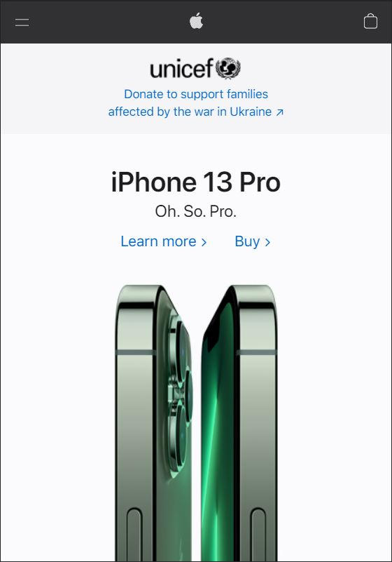

White Space
Apple
As one of the best examples of the use of this principle, Apple uses the white space to make people focus on their products at the same time they produce a very elegant and pleasing experience.
As one of the best examples of the use of this principle, Apple uses the white space to make people focus on their products at the same time they produce a very elegant and pleasing experience.
Slack takes advantage of the Fitt's Law to direct users to the actions they want people to do by using big, bright and hard to avoid buttons that are easy to click even if one does not want to.
The very pleasing and organized structure of Disney's website could be a paradise for those with an obsession for symmetry and alignment. All the titles, texts, buttons and pictures are neatly aligned for us to enjoy.